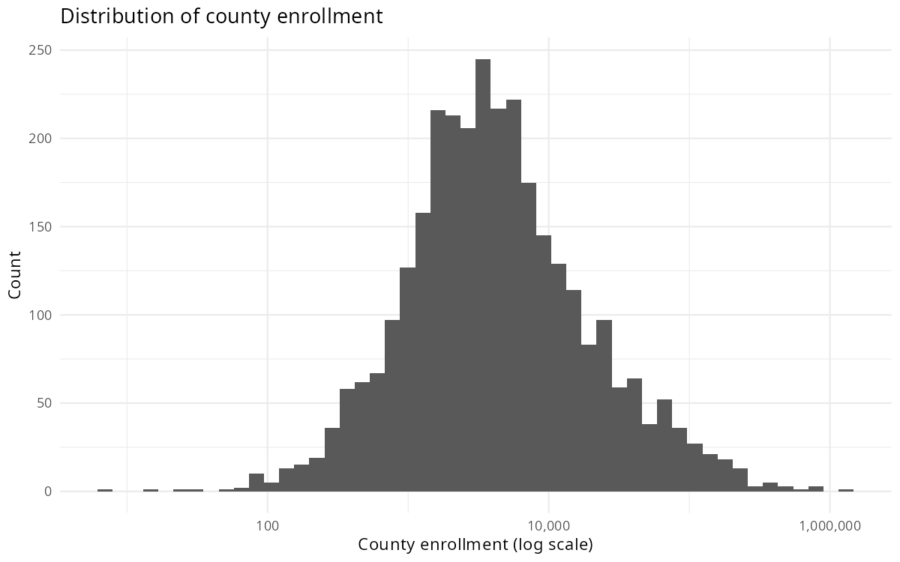
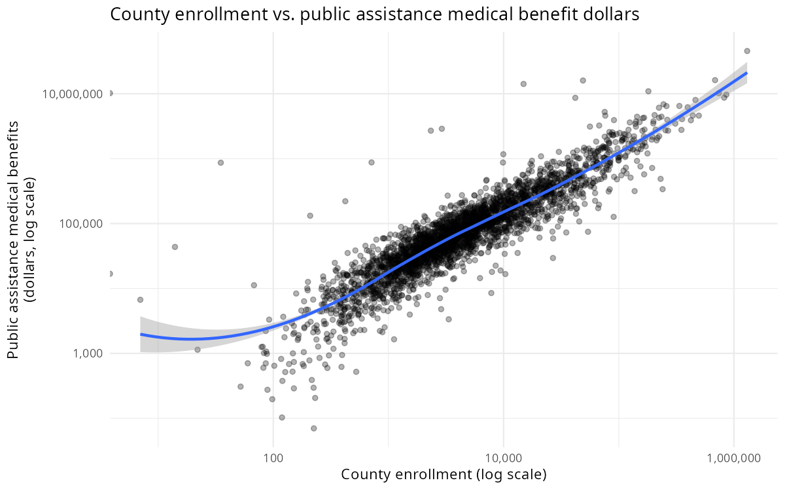
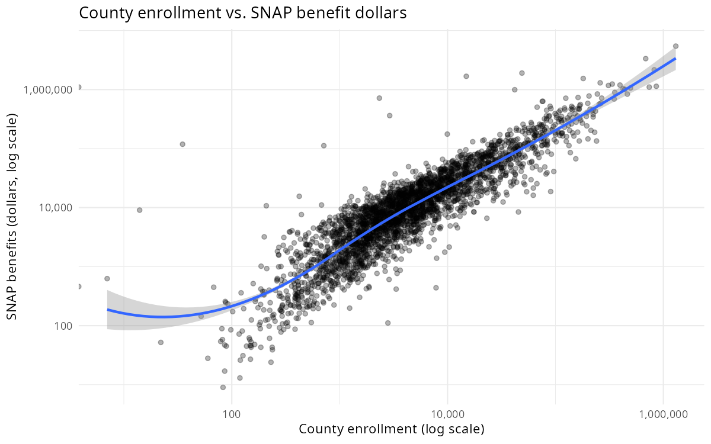
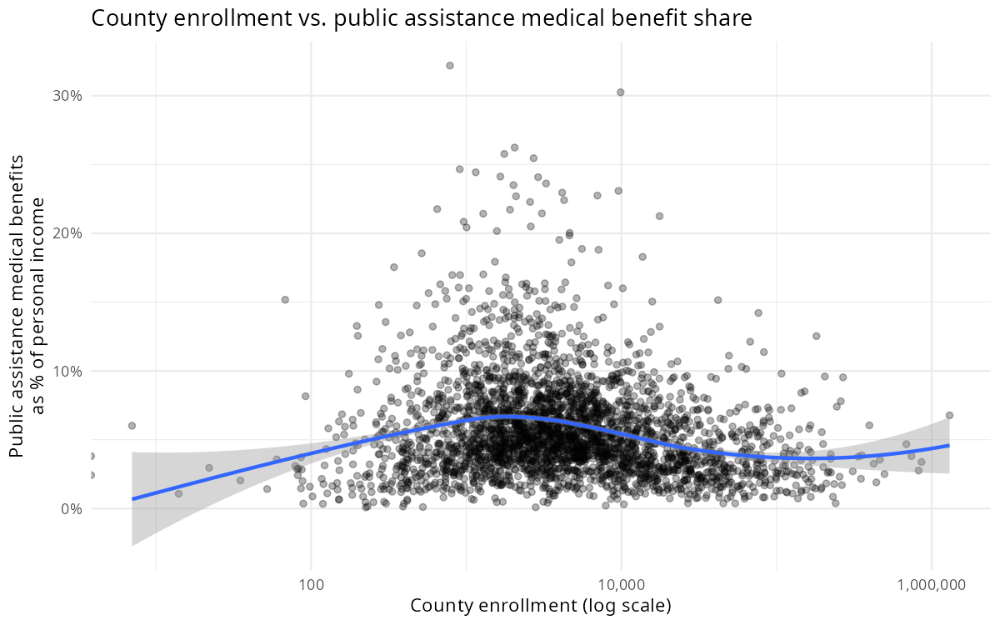
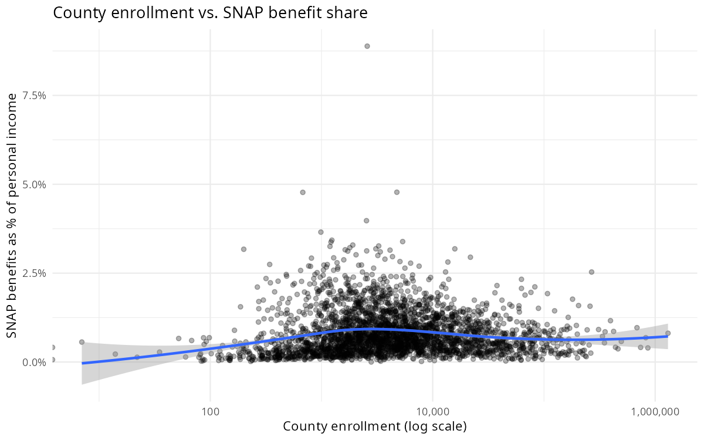
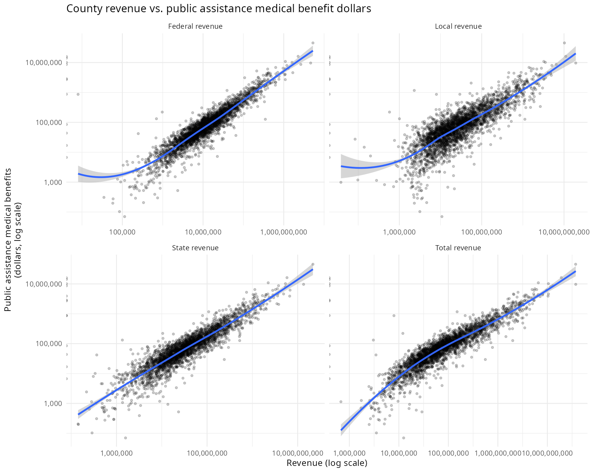
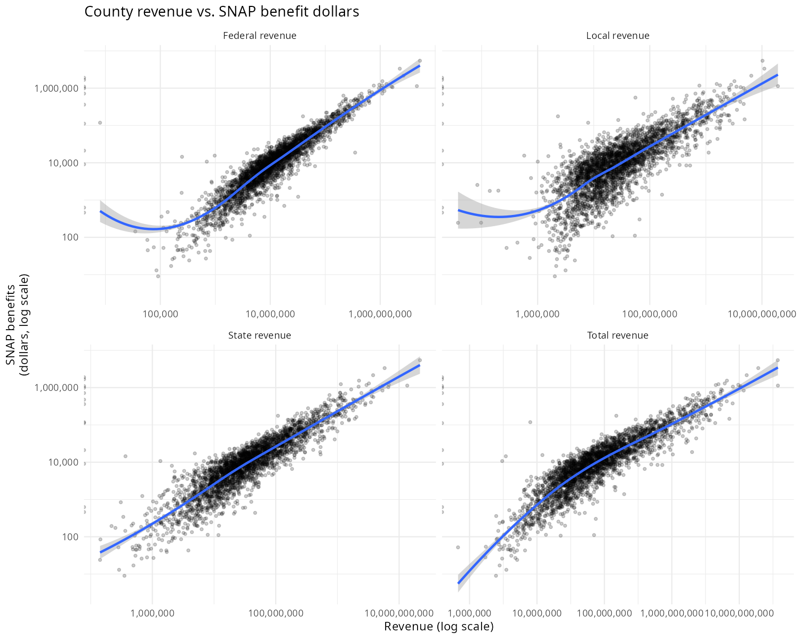

County-level relationships between school district finances and federal safety net program dollars. Data: NCES School District Finance Survey (2023), BEA Personal Income by County (2022).

Distribution of county-level school enrollment.

County enrollment vs. public assistance medical benefit dollars (log scales).

County enrollment vs. SNAP benefit dollars (log scales).

County enrollment vs. public assistance medical benefits (alternate specification).

County enrollment vs. SNAP benefits (alternate specification).

County school revenue (by source) vs. public assistance medical benefit dollars. Each panel shows a different revenue stream (log scales).

County school revenue (by source) vs. SNAP benefit dollars. Each panel shows a different revenue stream (log scales).